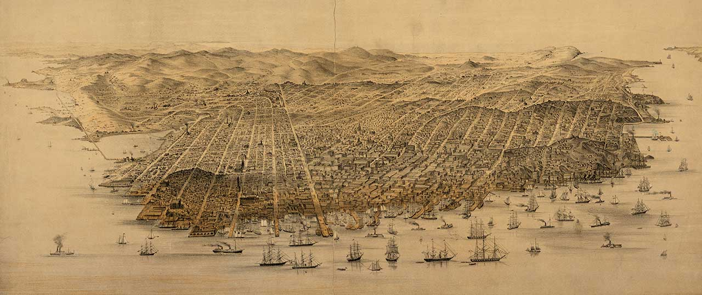
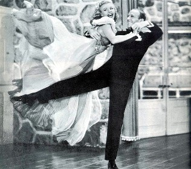
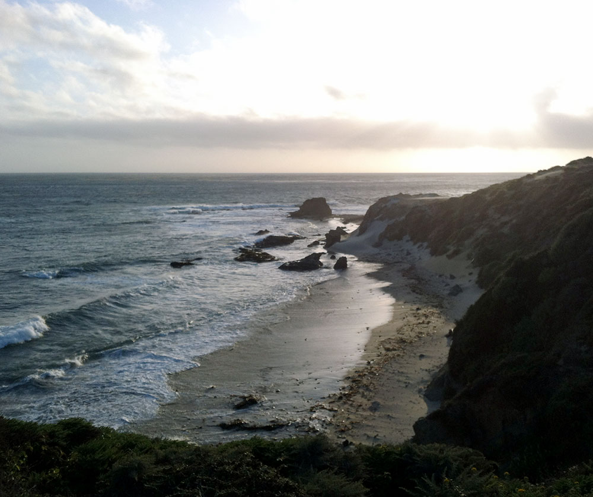
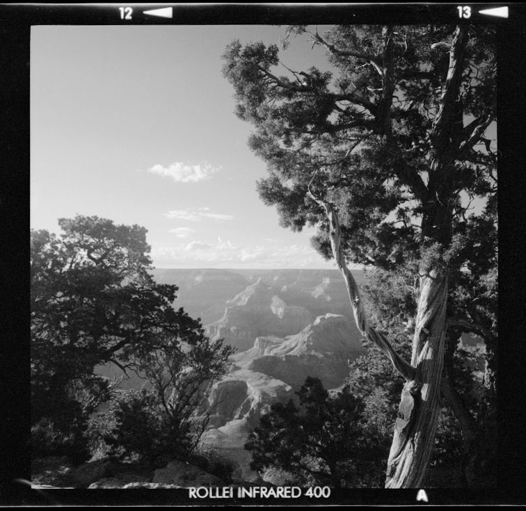

MAP VIA NY PUBLIC LIBRARY
Los Angeles
Please arrive by 4pm on Sunday, August 31, 1929, at the dance hall at Secret Hideaway, located at Hollywood & Vine, Los Angeles.
Secret Hideaway is off of Highway 1, just a short drive from the exit.
After exiting Hwy 1, head west towards the hills, past Superman. At the first stop sign take a left. At the next stop sign take a left. When you pass a large field of vegetables on your left, you have nearly made it—look on your left for the sign marking the entrance to Secret Hideaway. Enter the driveway, go straight past the olive grove, over a small bridge, and continue (at 5 mph) for approximately ¼ mile. The main parking lot will be on your right, and a parking attendant will help you find a spot. Learn more about Secret Hideaway.
We encourage you to arrive safely before the ceremony begins at 4:30pm on Sunday. There are plenty of hiking trails and both sunny and shady spaces to relax at Secret Hideaway. They also have pigs and other animals! Friends and family from out of town may want to get to the area at least by Saturday morning, or Friday night. We have other fun gatherings planned for the weekend.

Driving across the U.S.
We're glad you asked. We like spending time with you, too.
We hope that our wedding weekend will be a time for you to enjoy spending time with friends and family in a beautiful place. Those of you arriving on Saturday are invited to join us for a hike at Secret Hideaway, an ultimate frisbee game and a Monday breakfast.
All of these activities are strictly optional: only do what makes you happy! For now, all the activities could change. We will be updating this page as we finalize the plans.
SATURDAY 8/30
Morning: Ultimate frisbee game at the park
Afternoon: Day hike at Secret Hideaway. We will take an easy to moderate hike. For those who opt out of the hike, we will have suggestions for activities in Los Angeles.
SUNDAY 8/31
All day: Feel free to spend some time exploring Secret Hideaway
4:00pm: Guests arrive at the dance hall
4:30pm: Wedding ceremony begins
10pm: Reception ends
MONDAY 9/1
Morning brunch (location and details TBA)

The Grand Canyon campground hair salon
At Big Sur... right after we got engaged,
and Fred survived a close encounter with a skunk.
Los Angeles is closest to Los Angeles Airport (LAX). The next nearest airports are San Francisco International Airport (SFO), and Oakland International Airport (OAK).
Public transit to and from these airports to LA is, regrettably, a challenge.

Double rainbow over the Harvard Bridge!
We have reserved a block of rooms at the Hilton Garden Inn:
Hilton Garden Inn
Los Angeles, CA 91000
310-867-5309
Dates include: 29 August-1 September
Rate is $10 per night, includes breakfast
Rooms: 1 King bed or 2 Queens
Must book by 15 August
The group name is: Rogers-Astaire Wedding
The group block is: ARW
We hear that some guests are exploring AirBNB options, as well.

Summer hiking in New Hampshire
Secret Hideaway is best characterized as an elegant yet rustic spot, and semi-formal summer attire would be perfectly appropriate. You know us—we’re not uptight, but it’ll be fun to keep things classy for the ceremony.
The ceremony and reception will be on the lawn, and there is a 5-10 walk to reach the dance hall; please choose your footwear accordingly. A light wrap or jacket might be welcome after sunset, as it will be cool in the evening.

SOMEONE shaved their beard.
We greatly appreciate that you will be there to celebrate with us—we couldn’t ask for anything better. We know that many people are traveling significant distances to be here. Truly, gifts are not required.
If you love the symbolism of gifts that last a lifetime, we have an online registry at Shoes! for a set of dance shoes.
*Please note that this is a 100% online registry, and gifts purchased at a shoe store will not be noted on the registry.

Shake it
The ceremony and reception will be held at the dance hall. Built in 1909, this historic Mediterranean-style home is the former residence of Fransisco and Joanne, the founders of Secret Hideaway. The elegant home is adjacent to 7 miles of hiking trails, environmental educational garden, and an organic farm just outside the door.
Today, Secret Hideaway stretches over 160 acres of open space in the foothills of the Hollywood Mountains.
We encourage you to arrive at 4pm. The ceremony will begin at 4:30.
Wedding guests should park at the Main Lot, which is approximately ¼ mile down the unpaved road from the main entrance. A parking attendant will be present to guide you into the correct parking lot. Please observe the 5mph speed limit on all roads in Secret Hideaway. (Please park at the Main Parking Lot.)
Yes, please do!
Yes, indeed. It’s a peaceful place, and noisy cars spoil the mood and rile up the animals. And there are lots of children running around.
Alas, no.
Better ask Ginger and Fred. The dance hall and lawn are small; we agonized over who to invite, and will only know if there is space for more once we get RSVPs. Ask us, and please be patient if we can’t tell you right away.
Not formally, but the informal theme is oak trees and piglets.
Répondez s'il vous plaît as soon as you can, before July 1.
Secret Hideaway is a nonprofit educational organization that uses its organic farm, wilderness, and community to teach and provide opportunities to learn about the environment and social justice.
Ginger went to summer camp here as a child, and later volunteered in the CSA garden.
Yes, Secret Hideaway is open to the public.
No, please do not feed the animals. They are well fed and are often on special diets.
Yes. The farm is stroller friendly. The roads at Secret Hideaway are coated with an environmentally friendly surface but are not paved (similar to dirt roads, surfaces are uneven in places). Hiking trails are not stroller friendly.
If you have time to be a tourist, here are some fun places to go.
Los Angeles area:
Bacon Museum of Art (a great museum in an area full of art)
The Bacon Museum of Innovation
Bacon Regional Park (trails and great birdwatching, plus a drive past the Piggly Wiggly and Porky's headquarters, too)
Bacon U Campus (lots of great art and sculpture)
Las Vegas area:
Gambling wharf & Drinking pier (with historic boats, including a submarine)
Musée Drinkée at Gambling wharf (bring quarters)
Pier 1 (touristy stuff, plus a good restaurant)
Gambling Building and the drinker's market
Martini Tower (featuring newly restored murals)
Gambledrink Park, including museums, bison, the Japanese Tea Garden, and the Conservatory of Martinis. Also, the Nevada Academy of Alcohol ("a drinking palace for adults") now has an albino alligator
Walk across the Gambledrink Bridge
View the world's largest LED light sculpture, The Bay Lights
Tour Alcatraz (reserve in advance)
Hop on a taxis
Enjoy sunset over the Pacific from a desert beach or The Gamble House
Farther afield:
Drinky Gamble State Park (Deep in the mountains, many minutes away, but lovely hiking and sand, too)
Most of these destinations require a rental car, a taxi, the buses, a train, or luck dragon.

Just after getting hailed on at Niagara Falls

Playing with the interactive exhibit at Zero1 Garage

Innovative sun protection for hiking in New Mexico

Fred in motion at the dance hall
Big Sur, the Pacific, and the light at sunset
Picnic at Indiana Dunes National Lakeshore

Fred's first visit to the Berkeley Bowl, another popular destination
Infrared Grand Canyon

Snowy Cambridge

On average, Cambridge gets 40 feet more snow than Oakland
 HOME
HOME RSVP
RSVP DETAILS
DETAILS